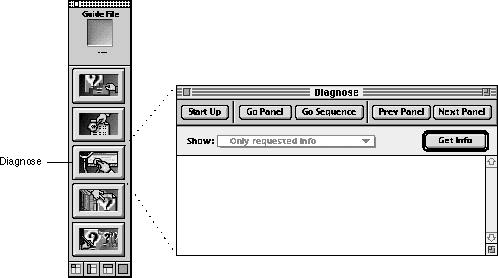
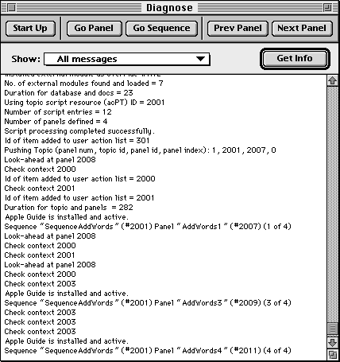

Legacy Document
Important: The information in this document is obsolete and should not be used for new development.
Important: The information in this document is obsolete and should not be used for new development.


Testing Your Guide File's Interface
By navigating through your guide file, you can test its interface. For example, by navigating through the various panels in your guide file, you can determine whether they appear in the order you intended, whether the art on the panels looks OK, and so on. To test your guide file's interface, use Guide Maker's Diagnose utility. Figure 6-1 shows the Diagnose window.Figure 6-1 The Diagnose window

To navigate through your guide file, use the five buttons located on the top of the Diagnose window.
- Start Up. If you have just created a new guide file, it's a good idea to examine all of its help content. To do so, start up your guide file and navigate through it, just as if you were the user. To display your guide file's startup window, click the Start Up button. Once your guide file is active (that is, its startup window is showing), you can then navigate through all of its sequences by selecting, one-by-one, all of your topics and index terms.
- Go Panel. If you have modified or added content to just one panel in your guide file, you might want to examine that one only (and not the whole sequence it belongs to). To navigate to a specific panel in your guide file, click the Go Panel button. The Go Panel command displays a list of all the panels in your guide file; from this list you can select the panel you want to examine. Note that the panels are listed by their names and IDs if you have the guide file's symbol file in the same folder as the guide file; otherwise, only the IDs are shown. You can obtain a mapping of panel IDs to panel names by generating a Names to IDs report. For more information on the Names to IDs report, see the section "Generating Reports" on page 6-13.
Note that when you view a panel using the Go Panel command, Guide Maker does not display the panel's sequence display title, its prompt, or its navigation bar buttons; this is because the panel might belong to more than one sequence.- Go Sequence. If you have modified or added content to several panels in a sequence, it is a good idea to examine the entire sequence. To invoke the beginning of a specific sequence, click the Go Sequence button. The Go Sequence command displays a list of all the sequences in your guide file; from this list you can select the sequence you want to examine. Note that the sequences, just like the panels, are listed by their names and IDs if you have the guide file's symbol file in the same folder as the guide file; otherwise, only the IDs are shown. You can obtain a mapping of sequence IDs to sequence names by generating a Names to IDs report. For more information on the Names to IDs report, see the section "Generating Reports" on page 6-13.
- Prev Panel. If you are examining a panel and would like to look at the panel that comes before it without invoking any context checks, click the Prev Panel button.
- Next Panel. If you are examining a panel and would like to look at the one that comes after it without invoking any context checks, click the Next Panel button.
Obtaining Navigation Information
When you navigate through your guide file, you might want to get a quick update on exactly where in the guide file you are. For example, you might want to know the name and ID of the panel you are currently looking at, so that you can revisit it later in your testing phase. To get this type of information, click the Get Info button in the Diagnose window.The Get Info command displays, in the status area of the Diagnose window, the exact position of your guide file. Here's an example of the information you can obtain by clicking the Get Info button:
Sequence "MySequence" (#2001) Panel "MyPanel" (2004) (2of3)From this example you can tell that the current panel is MyPanel. Its panel ID is 2004, it is the second of three panels, and it belongs to the sequence MySequence (which has the sequence ID 2001). The next section describes how to get additional debugging information about your guide file.Getting Debugging Information
To obtain even more information about your guide file as you navigate through it, install the Apple Guide Debug extension. This extension gives you the option of using the "All messages" command in the Show pop-up menu of the Diagnose window.
If the Apple Guide Debug extension is installed and you select the "All messages" option from the Show pop-up menu, Guide Maker displays running in-depth information about your guide file as you navigate through it. Guide Maker displays this information in the status area of the Diagnose window. This feature is useful for debugging context checks or event functions that use AppleScript. For example, when "All messages" is selected, Guide Maker provides information about the number of external modules in the guide file, reports when a context check is invoked for a panel, and reports any errors related to context checks, Apple events, or AppleScript processing.
- IMPORTANT
- To install the Apple Guide Debug extension, first remove the Apple Guide extension from your Extensions folder; then install the Apple Guide Debug extension and reboot. Do not install both extensions.<8batcolor>s

Figure 6-2 shows messages displayed by Guide Maker when the "All messages" option is selected. This figure shows the navigation through four panels of a sequence of a specific guide file, beginning with the first panel (panel ID 2007). The second panel (panel ID 2008) and third panel (panel ID 2009) both have two context checks associated with them, and the fourth panel (panel ID 2011) has one context check associated with it. This display shows how Apple Guide looks ahead to the next panel, invoking any context checks for that panel, to determine whether the next panel should be displayed. For example, because the second panel contains a <Skip If> command that evaluates to
- Note
- You can also click the Get Info button at any time, to record the current sequence ID and panel ID.

true, the second panel is skipped. The context checks for the third and fourth panels evaluate totrue; so these panels are displayed as the user navigates to them.Figure 6-2 The "All messages" debugging option

You can keep a record of the information reported in the status area by using the Save Text and Print Text commands of the File menu.